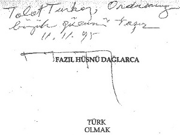

İmzalı Kitaplardan Seçmeler
Aziz Nesin (18 Şubat 1987)
“Sevgili Talat Turhan, Karanlık ve kirli bir döneme ışık tutup o dönemin çirkin yüzünü gözler önüne seren Bomba Davası, Savunma’nızı yararlanarak öğrenerek okudum. Sağolun! Ellerinize sağlık... Dostlukla.”
* * *

“Talat Turhan, ordunun büyük gücünü taşır”
Fazıl Hüsnü Dağlarca, 11 Kasım 1995